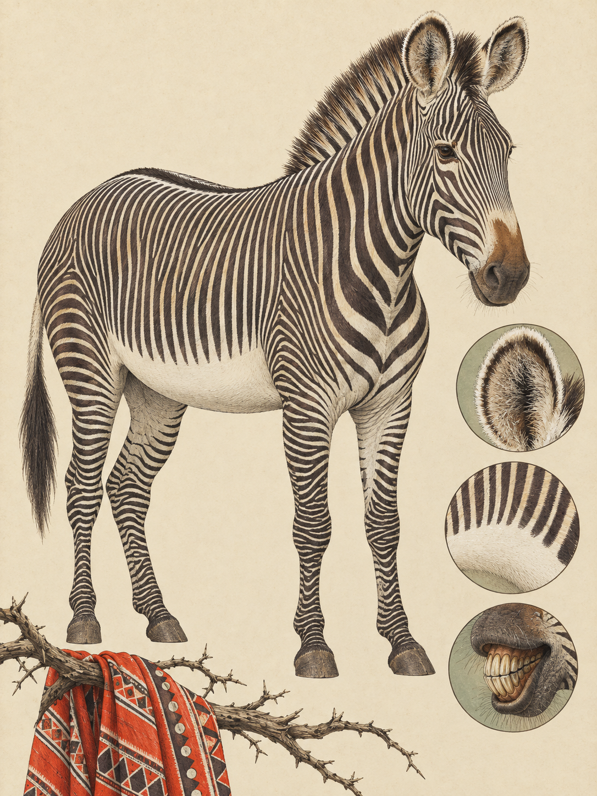

LAIKIPIA / MT. KENYA
Equus grevyi
Swahili: „Punda Kanga“; Kamba: „Nzai“

Am Wasser von Ol Pejeta beginnt die Geschichte des Grevyzebras mit einer Frage: Wer muss wann trinken? Die schmalen, eng stehenden Streifen laufen bis zu den Hufen, werden am Hals breiter und enden unter dem Bauch. Dort bleibt das Fell rein weiß, ebenso an der Basis des Schwanzes. Ein dunkler Aalstrich folgt der Wirbelsäule, die Stehmähne steht aufrecht, und die großen Ohren drehen sich in der trockenen Luft. Das Grevyzebra ist die größte wildlebende Equiden-Art der Gegenwart. Es erreicht 1,45 bis 1,60 Meter Schulterhöhe und wiegt 350 bis 450 Kilogramm. Hengste sind im Durchschnitt schwerer und haben einen kräftigeren Nacken.
Der wissenschaftliche Name Equus grevyi bewahrt eine diplomatische Episode. Jean-Frédéric Émile Oustalet beschrieb die Art 1882. Das Artepitheton grevyi ehrt Jules Grévy, den französischen Präsidenten von 1879 bis 1887. In den 1880er Jahren erhielt er ein lebendes Zebra aus dem damaligen Abessinien als Geschenk. Die Griechen und Römer überlieferten für auffällig gestreifte Pferdeartige den Namen Hippotigris, „Pferdetiger“. Cassius Dio berichtete, dass im Jahr 212 nach Christus unter Kaiser Caracalla ein solches Tier im antiken Rom getötet wurde. Heute ist das Grevyzebra der einzige rezente Vertreter der Untergattung Dolichohippus. Ein Schädel aus dem kenianischen Baringo-Becken ist 547.000 bis 392.600 Jahre alt. Die Art wirkt mit ihrer kräftigen Kopfform und der braunen Nüsternpartie in manchen Zügen eher eselartig als wie ein Steppenzebra.
Die Ordnung seines Lebens beginnt im Verdauungssystem. Grevyzebras sind Enddarmfermentierer. Sie verarbeiten große Mengen nährstoffarmer, faserreicher und kieselsäurehaltiger Gräser. Dabei verlieren sie viel Wasser. Nicht laktierende Stuten und Hengste können bis zu fünf Tage ohne Oberflächenwasser auskommen. Eine laktierende Stute muss dagegen alle ein bis zwei Tage trinken. In der trockenen Landschaft liegen Weide und Wasser oft weit auseinander. Eine Stute mit Fohlen kann deshalb nicht einfach einer festen Gruppe folgen, während ein trockenstehendes Tier zu besseren Weidegründen weiterwandert. Die unterschiedlichen Bedürfnisse lösen die Zebraherde auf.
Aus dieser Trennung entsteht die Territorialität der Hengste. Dominante Männchen besetzen Reviere an strategisch wichtigen Ressourcenkorridoren, primär um Wasserstellen oder auf Wegen zwischen Weide und Wasser. Sie patrouillieren die Grenzen nicht ständig, sondern markieren sie mit großen Kotplätzen und deren Geruch. Andere, meist jüngere Männchen dürfen als Gäste bleiben, solange keine brünftige Stute anwesend ist. Kommt eine paarungsbereite Stute, verteidigt der Revierhengst sein Fortpflanzungsrecht mit Bissen in Flanken, Rücken und Nacken. Hans Klingel erforschte dieses System in den 1970er Jahren, Daniel I. Rubenstein ab 1986. Ob die Territorialität eine anpassungsfähige Antwort oder teilweise fehlangepasst ist, blieb umstritten.
Ende September und Anfang Oktober erreicht die Trockenzeit im Laikipia-Samburu-Ökosystem ihren Höhepunkt, bevor die kleine Regenzeit einsetzt. Auf ungeschütztem Gemeindeland haben Rinder das Gras bis auf die Wurzeln abgefressen. Deshalb wandern die Zebras gezielt in geschützte Reservate und auf Ranches wie Ol Pejeta und das Mpala Research Centre. Dort bleiben hohe Bänke alten, vertrockneten Grases stehen, das die Enddarmfermentation dennoch erschließt. Die Stuten führen die im August und September geborenen Fohlen mit sich. Weil die Milchproduktion den Wasserbedarf erhöht, binden sich diese Familien an Flussläufe oder künstliche Wasserlöcher bei Ol Pejeta, Nanyuki und Rumuruti. Ein Revier kann viel Gras enthalten. Eine laktierende Stute braucht trotzdem den nächsten Zugang zum Wasser.
Auch die Fohlen tragen zur sozialen Ordnung bei. Sie urinieren und koten häufig über die Ausscheidungen ihrer Mütter. Dieses Overmarking wird als Abgleich und Signal gemeinsamer olfaktorischer Identität gedeutet. Adulte Hengste nutzen es zur Kommunikation und zum Zusammenhalt, nicht zur Unterdrückung des Geruchs brünftiger Stuten. Die Tiere setzen außerdem die Eier von Fadenwürmern eher in der Sonne als im Schatten ab. Dort trocknen sie aus und sterben. Eine Zebraherde beeinflusst damit durch ihre Wege und Latrinen die Parasitenlast ihres eigenen Lebensraums.
Bei Grevyzebras kommt es außerdem häufiger als bei Steppen- oder Bergzebras vor, dass ein Fohlen bei einer fremden Stute zu trinken versucht. Von 117 dokumentierten Versuchen waren 13 erfolgreich. Es gibt auch Nachweise für die vollständige Adoption verwaister Fohlen. Geburten sind nicht streng an eine Jahreszeit gebunden, häufen sich aber nach der frühen Regenzeit und fallen nach einer Tragzeit von 350 bis 400 Tagen meist in August und September. Erst ab drei Monaten nehmen die Fohlen selbstständig Wasser auf. Bis dahin bestimmt die Mutter, wie weit die kleine Familie von der Wasserstelle weggehen kann.
In Laikipia teilt sich das Grevyzebra den Raum mit dem Steppenzebra, Equus quagga. Die erste Generation von Hybriden entsteht ausschließlich aus Grevyzebra-Hengsten und Steppenzebra-Stuten. Weibliche Hybriden sind fruchtbar und ziehen eigene Fohlen auf. Sie leben meist im Haremsystem der Steppenzebras, zeigen aber eine erhöhte Wachsamkeit, wie sie von Grevyzebras bekannt ist. Nach der Jagdkrise der 1970er Jahre und Kenias Jagdverbot von 1977 wurden 2016 nur 2.350 Tiere gezählt. Die Zählung war aus der Luft schwierig, weil die Zebras in der Tageshitze im Akazienschatten stehen und schwer zu unterscheiden sind.
Im Schatten einer Akazie steht ein Hengst. Seine schmalen Streifen verlieren sich im flimmernden Licht, während die weiße Bauchlinie sichtbar bleibt. Dort endet das Muster, doch nicht die Bewegung der Herde.
Historisch nutzten lokale nomadische Gesellschaften das Grevyzebra gelegentlich als Fleischquelle und für traditionelle medizinische Praktiken. Heute sehen Samburu und Maasai es überwiegend positiv. In Befragungen erklärten Pastoralisten, dass die Zebras kaum als Nahrungskonkurrenten ihrer Rinder gelten, weil sie auch harte Gräser fressen, die für Rinder ungeeignet sind. Konflikte entstehen vor allem, wenn Wasserstellen versiegen und Wildtiere und Nutztiere direkt um den Zugang konkurrieren. Überweidung und die Zerschneidung von Wanderkorridoren bleiben große Gefahren. Ein Milzbrand-Ausbruch in Wamba tötete zwischen Dezember 2005 und März 2006 mindestens 53 Grevyzebras.
Die Art gilt bei der IUCN als stark gefährdet und steht im Anhang I von CITES. Die Great Grevy's Rally zählt die Tiere seit 2016 an zwei Stichtagen mit zivilen Teams, Wissenschaftlern und Rangern. Weil jedes Streifenmuster einmalig ist, können die Fotografien einzelne Tiere wiedererkennen. 2018 wurden weltweit 3.042 Tiere ermittelt, davon 2.812 in Kenia und 230 in Äthiopien. Das Kenya Wildlife Service übernimmt die Ergebnisse als offizielle Bestandszahlen.
Wo und wann: Im frühen Morgenlicht oder am späten Nachmittag bei Ol Pejeta, Mpala, Nanyuki oder Rumuruti warten. An Wasserstellen Abstand halten und Tierpfade nicht blockieren, besonders wenn Stuten mit Fohlen trinken.
Brennweite: 100 bis 400 mm oder 150 bis 600 mm für Tiere am Wasser. 45 mm für eine Herde in der kargen Landschaft mit dem Mount Kenya im Hintergrund.
Bild-Idee: Ein Fohlen beim Overmarking neben dem weißen Bauch der Mutter oder eine Herde im Akazienschatten, in dem die Streifen mit dem flimmernden Licht verschmelzen.